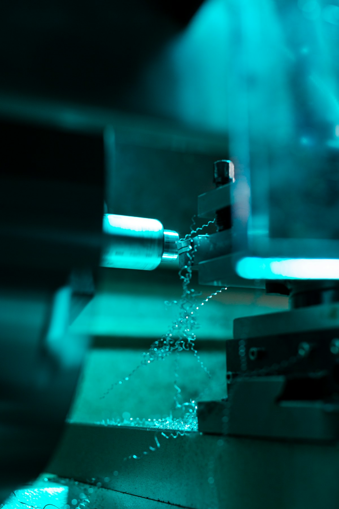
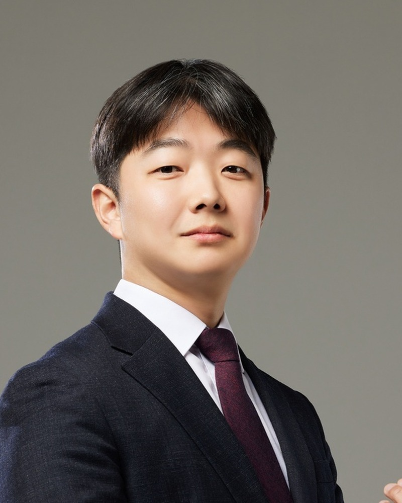
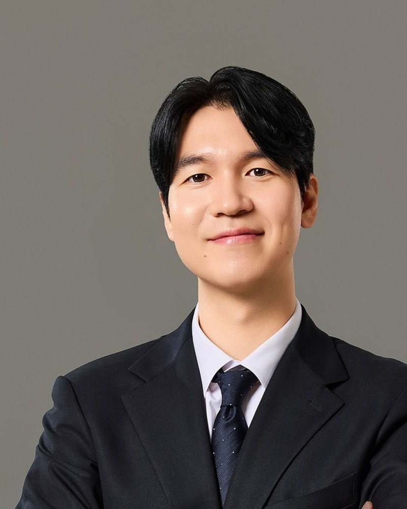
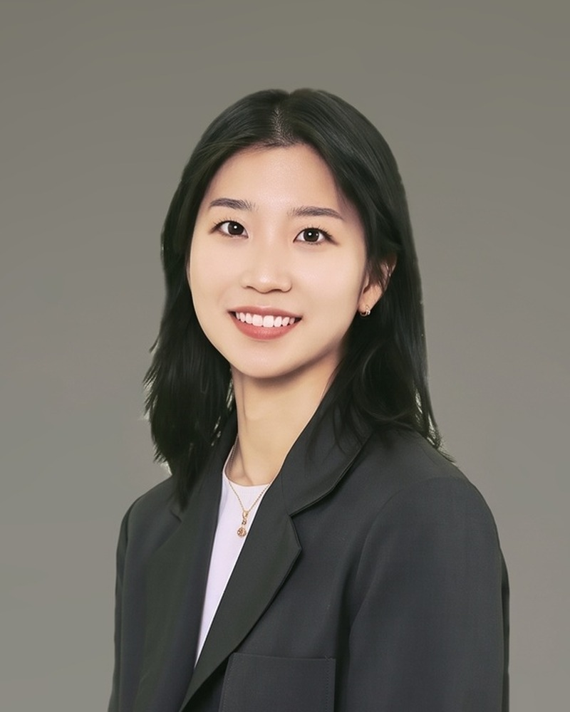
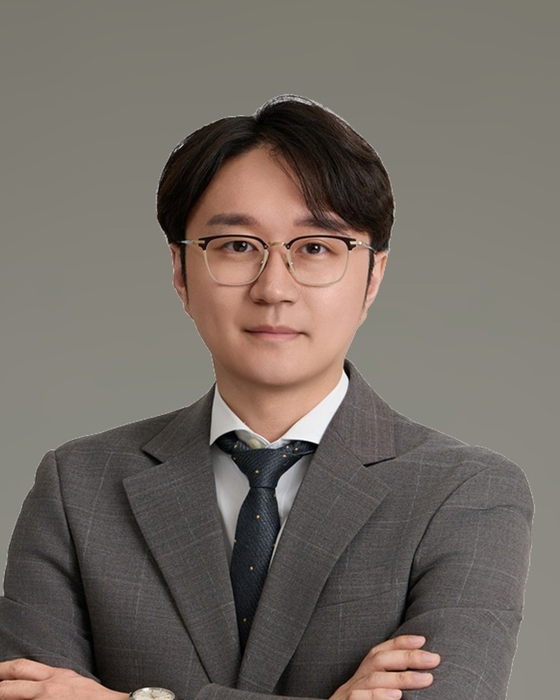

확보한다
특허·실용신안·디자인·상표의 국내 출원과 등록. 중간사건 대응 전략까지 함께 설계합니다.
→NEAR & WISE IP LAW OFFICE · SEOUL
엔지니어 출신 변리사가 기술을 먼저 이해합니다. 출원부터 분쟁, 평가, 회수까지 한 팀이 이어받습니다.
어떤 일로 오셨나요?
고객의 위치와 사건의 목적에 따라 필요한 대응이 달라집니다. 담당 변리사가 처음부터 직접 이어갑니다.
멤버십 분과 이사
YMC 이사
한국 연계 대리인
평가 자문위원
Near in practice. Wise in strategy.
권리화가 목적이 아닙니다. 그 권리가 사업에서 작동하는지가 목적입니다.
담당 변리사가 처음부터 끝까지 직접 응대합니다. 기술 맥락이 창구 사이에서 끊기지 않도록, 사업 단계와 경쟁 구도를 읽고 최적의 보호 방식과 권리 회수 경로를 함께 설계합니다.
“등록에서 멈추지 않고, 그 권리가 사업에서 실제로 작동하도록 만듭니다.”백승엽 대표 변리사

Engineers first. Attorneys always.
각 업무는 독립된 상품이 아니라 앞뒤로 이어집니다. 매각을 다뤄본 경험이 출원 단계의 청구항 설계를 교정합니다.
특허·실용신안·디자인·상표의 국내 출원과 등록. 중간사건 대응 전략까지 함께 설계합니다.
→침해분석과 감정, 회피설계, 경고장 대응, 심판과 소송. 분쟁이 열리기 전에 구조를 점검합니다.
→PCT와 개별국 출원, 명세서 번역, 주요국 현지 대리인 협업. 시장이 열리는 순서대로 권리를 배치합니다.
→등록 이후를 다루는 사람이 출원 단계의 설계도 다르게 합니다. 침해 입증 가능성, 패밀리 구조와 권리의 거래 가능성까지 함께 봅니다.
IP 가치평가 문의 →Professionals
변리사 4인과 협력 변호사 1인이 기술 분야별로 사건을 직접 담당합니다.

BAIK, Seungyeob · Founding Partner
대표 변리사한양대학교 원자력공학
국제 사건, 출원·심판·소송, IP 가치평가
JIN, Junhyung · Partner
대표 변리사서울대학교 기계항공공학
출원·심판·소송, 상표·디자인
LYU, Taeweon · Patent Attorney
변리사부산대학교 전기공학
전기·전자 출원·권리화, 기술신용평가사 2급
YOON, Jiyoung · Patent Attorney
변리사KAIST 생명화학공학
UCD 전자공학 석사 재학

협력SHIN, Kihyun · Of Counsel
협력 변호사 · 변리사서울대 화학생물공학 · 연세대 로스쿨 J.D.
소송·법률자문, M&A·라이선싱·투자·계약전기·전자와 소프트웨어 분야의 권리화 역량을 강화합니다.
해외 출원인이 한국 진입 과정에서 놓치기 쉬운 실무 차이를 정리합니다.
국제 라이선싱 현장에서 확인한 최신 쟁점과 거래 흐름을 공유합니다.
현재 항목은 레이아웃 확인용 예시이며 실제 게시물로 순차 교체합니다.
보호 가능성 검토부터 출원 전략까지, 첫 대화에서 함께 정리합니다.